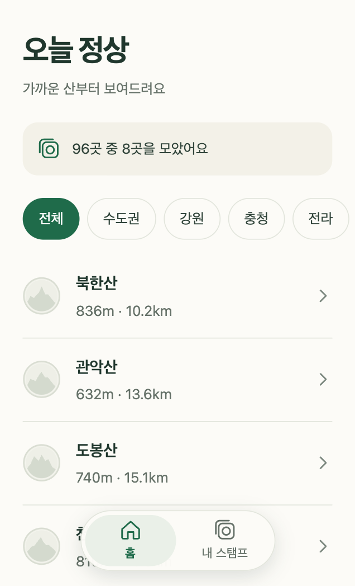
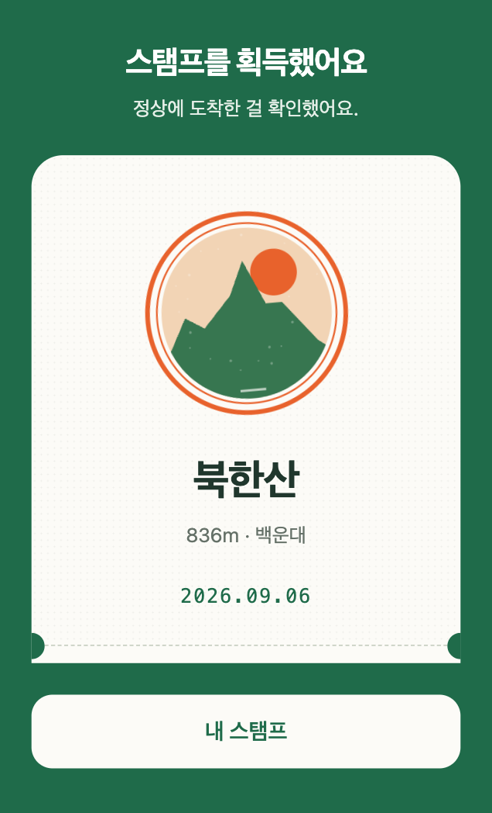
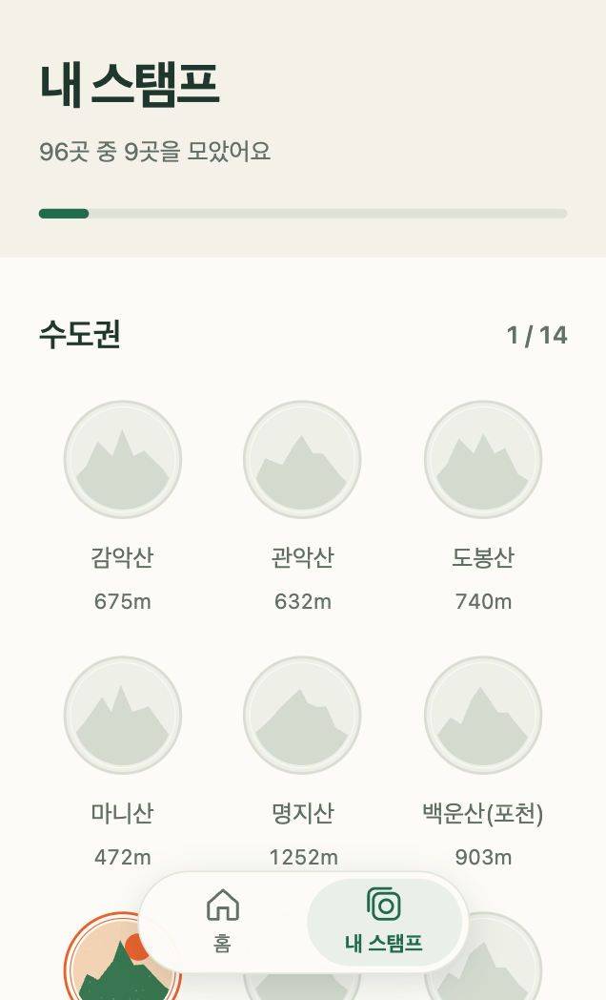

오늘 정상
100대 명산 정상 스탬프 · 토스 미니앱 · 만물보부상
산 정상에 도착해 버튼을 누르면 위치를 한 번 확인해 그 산의 스탬프를 드립니다.
마라톤 완주 메달처럼, 오른 산이 도장으로 남습니다.
같은 산이라도 봄·여름·가을·겨울에 오르면 계절마다 다른 스탬프가 모입니다.
토스 앱 안에서 동작하는 미니앱입니다.
별도 설치 없이 토스 앱에서 오늘 정상을 검색하거나, 휴대폰에서 아래 버튼을 누르면 열립니다.
PC 브라우저에서는 열리지 않습니다.
토스 앱에서 열기

가까운 산부터 · 지역·이름으로 찾기

정상에서 인증하면 스탬프가 찍힙니다

모은 스탬프는 권역별로 모입니다
이런 기능이 있어요
- 정상 인증 — 정상 반경 안에서 버튼을 누르면 스탬프를 드립니다. 밖이면 남은 거리를 알려드립니다.
- 산 목록 — 산림청 100대 명산 96곳과 수도권 동네 명산 30곳. 내 위치에서 가까운 순서로 보여줍니다.
- 내 스탬프 — 권역별 컬렉션. 토스 로그인으로 저장되어 휴대폰을 바꿔도 남습니다.
- 계절 스탬프 — 같은 산을 계절마다 오르면 네 장이 따로 모입니다.
- 내려와서 — 산 근처 음식점과 카페를 보여줍니다.
위치 정보
위치는 인증 버튼을 누를 때만 한 번 확인하고 저장하지 않습니다. 계속 추적하지 않습니다.
이용자가 직접 "여기도 정상"이라고 알려준 경우에만 그 좌표를 1년간 보관하며, 다른 이용자에게 보이지 않습니다.
자세한 내용은 개인정보처리방침에 있습니다.
약관 및 정책